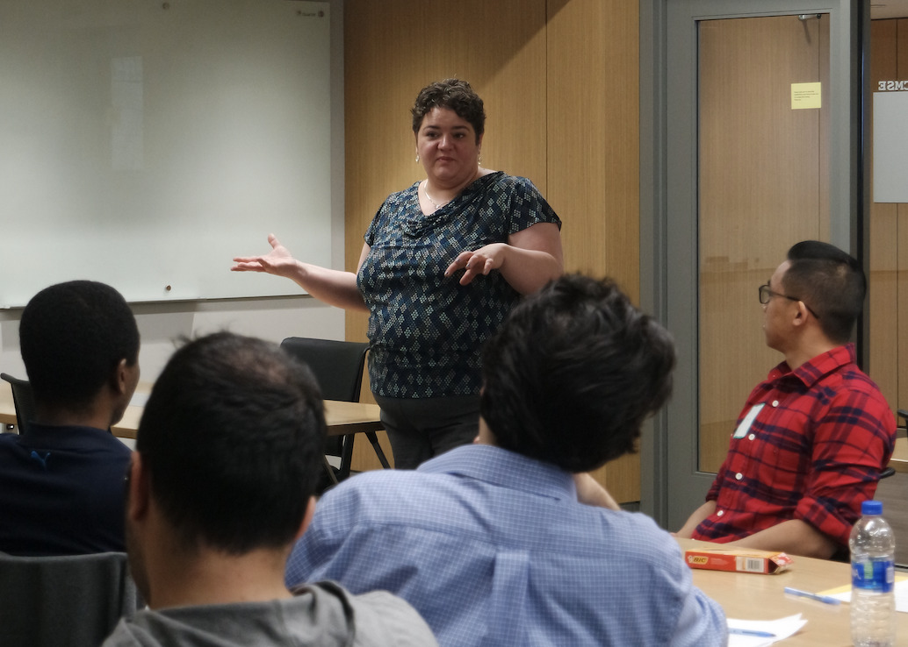
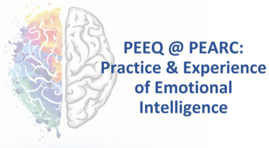

Graduate CyberAmbassador Course
Thu 10 January 2019 by Dirk Colbry
This semester we are teaching a in-person class at Michigan State University to provide the CyberAmbassador curriculum in its entirety. The course will consists of ~16 hours of the CyberAmbassador training, ~9 hours of Entering Mentoring curriculum and ~6 hours of discussion-based RCR (responsible conduct of research) training required of all MSU graduate students prior to graduation.
We hope this course will catalyze curriculum development and provide lot of updates and improvements over the semester.
Latest Module - Effective Meeting Management

Image from Peter Durand at Flickr
We just got finished presenting our latest module to the Campus Research Computing Consortium (CaRCC) monthly call for their Research Facing CyberInfrastructer professionals. This session was conducted completely online using Zoom and it turned out to be quite effective.
read more2018 Tau Beta Pi Convention

Tau Beta Pi, the engineering honor society, meets every year for their National Convention. This year the convention is meeting in Denver Co. Dr. Katy Colbry is presenting a pilot of a new Engineering Futures module titled "Complex Conversations". This module is based closely on the curriculum developed for the …
read moreCampus Champion CyberAmbassador Presentation

6 Ways Michigan State University is Leveraging the Resources and Expertise of the National Research Mentoring Network

One of the objectives of the CyberAmbassador project is to reach out and work with other Professional Skills training programs. Co-Pi, Dr. Kathleen Colbry is a trained facilitator for the National Research Mentoring Network (NRMN) and the Director of Engineering Futures professional training program though Tau Beta Pi (The engineering …
read morePractice Examples for Complex Communication

We are excited to present some of our newest CyberAmbassador Curriculum developed specifically for the 2018 ACI-REF Virtual residency. We have been given a 90 minute slot to introduce the topic of communicating complex topics. Below is a link to our slides and links to the practice examples:
read morePEARC18 Birds of a Feather (BOF)

{kind=link}
The CyberAmbassador Birds of a Feather Event at the 2018 PEARC Conference was a success!
We had a great turn out and a wonderful discussion about the current state of professional skills training in CI. The discussion was fairly open but we did …
read morePEEQ - Practice and Experience of Emotional Intelligence in CI

On Wednesday at PEARC18 Aaron Culich lead an amazing workshop on the Practice and Experience of Emotional Intelligence in CI. The room was filled to the brim with CI professionals all looking to bring some calm and order into our lives. The CyberAmbassador project hopes to work with Aaron and …
read moreBringing Professional Skills Training to CI - PEARC18 Birds of a Feather (BOF)

The CyberAmbassador project will be hosting a Birds of a Feather Event at the 2018 PEARC Conference. Please Join us on Wednesday, July 25th from 5pm - 6pm. More information can be found here:
Description: A number of professional skills training programs and resources have been developed …
read moreCampus Champions 101 at PEARC18
Thank you to Dan Voss for including CyberAmbassadors program in your talk "National Ecosystem: Things & People" Campus Champion 101 workshop at PEARC18. A copy of his slides can be found here:
read more